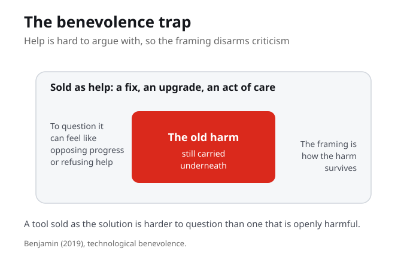
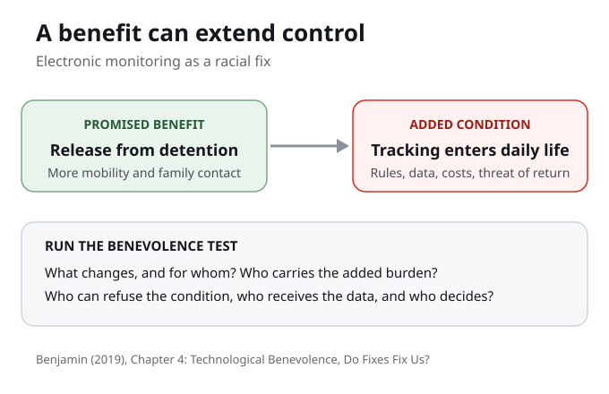
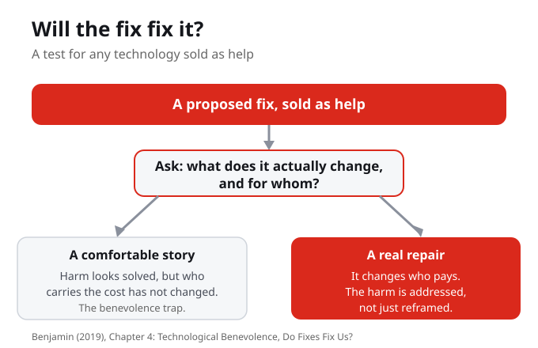

Part III continues. Last week offered a model of agency, Indigenous data sovereignty. This week we meet the fourth and final dimension of the New Jim Code. Benjamin saves it for the turn toward response, because it is the one that hides as help. With this week, you have all four dimensions: engineered inequity, default discrimination, coded exposure, and technological benevolence. The anatomy is whole.
Benjamin saves technological benevolence for last because it is the dimension that hides as help. Once you have it, you have the whole anatomy of the New Jim Code, and the toolkit to test any system.
Why might the dimension saved for the turn toward fixing things be the most dangerous one to name?

Technological benevolence is technology sold as good for us, a fix, an upgrade, an act of care, that still carries the old harms. The benevolent framing is not a side effect; it is how the harm survives, because help is hard to argue with. A tool sold as the solution is harder to question than one that is openly harmful. That difficulty is the trap.
The benevolent framing is not a side effect; it is how the harm survives. A tool sold as the solution is harder to question than one that is openly harmful, and that difficulty is the trap.
When something is sold to you as care, what makes it harder to criticize than something openly harmful?
The danger is not only the harm. It is how the language of help makes the harm hard to name. On the surface, a tool is marketed as help, care, a fix, an upgrade. Underneath, the same harm survives, now harder to question. To criticize it can feel like opposing progress or refusing help, and that discomfort is exactly what keeps the harm in place.
The trap is not only the harm itself, but the difficulty of naming it once it wears the language of care. A harm you cannot name, you cannot organize against.
When refusing a tool would make you look ungrateful, who benefits from that discomfort?

Benjamin makes it concrete in Raising Robots. Robots and automation are imagined as helpers, even servants, and the disposability of robots travels with the denigration of racialized people. She gives the example of police throwbots, sent in first so officers can own the real estate with their eyes before paying with their bodies. The machine is framed as safety. Ask: safety for whom.
The disposability of robots travels with the denigration of racialized people. The throwbot is sent in first so officers can own the real estate with their eyes before paying with their bodies, and it is sold as safety.
When a machine is framed as safety, whose safety is it, and who is treated as disposable?

Benjamin's working question for this dimension is, will the fix fix it? For any proposed solution, ask what it actually changes and for whom. A comfortable story makes harm look solved while who carries the cost has not changed; criticism feels like opposing progress. A real repair changes who pays. The test is to separate real repair from a comfortable story about one.
A comfortable story makes harm look solved while who carries the cost has not changed. A real repair changes who pays. The test is to separate the two.
Pick a proposed solution and ask: what does it actually change, and for whom?
So the working question is, will the fix fix it? For any proposed solution, ask what it actually changes and for whom. A comfortable story makes harm look solved while who carries the cost has not changed; a real repair changes who pays. When you next hear a fix promised at school, at work, or in an app, ask who carries the cost now and whether that actually changed.
Will the fix fix it is not just for the readings. It is a habit to carry into your own life, asking who carries the cost now and whether a promised fix actually changed it.
Think of a fix recently promised in your own life. Who carries the cost now, and did that change?
And remember, benevolence rarely arrives alone. A friendly tool can still carry engineered inequity, untested defaults, or coded exposure underneath. A diversity dashboard can still amplify a gap. An accessible app can still default to one kind of user. A safety camera can still watch unevenly. When something is sold as help, ask which of the other dimensions it is hiding.
If benevolence travels with the other three, a tool that calls itself helpful deserves more suspicion, not less. The friendly label is your cue to look harder, not to relax.
Take a tool you use that is sold as help. Which of the other three dimensions might it be carrying?
Here is a habit you can use on any system sold as help this week. Ask three questions. Who does this actually serve, and who still carries the cost? What does it really change, and what does it only appear to change? And what does the language of help make harder to question? These are not a quiz, they are a habit, so that you start asking them before you are sold on a system rather than after it has shaped your life.
Three questions: who does it serve and who carries the cost; what does it really change versus only appear to change; and what does the language of help make harder to question.
Run the three questions on one tool you already use. Which question is hardest to answer honestly?
Now make it your own. Add a technological-benevolence entry to your Personal Cartography this week. Choose a technology marketed as a fix, a helper, or an upgrade. Name the harm underneath and what the help makes hard to question. When you can name the benevolence trap in a tool you actually use, the theory stops being Benjamin's argument and becomes a lens you own. Keep it privacy-safe: describe the system, not anyone's private data.
Choosing your own example is the point. Naming the benevolence trap in a tool you actually use turns the theory into a lens you own.
Which technology marketed to you as a fix or an upgrade will you map this week, and what is the harm underneath?
Technological benevolence is technology sold as good for us, a fix, an upgrade, an act of care, that still carries the old harms. The benevolent framing is not a side effect; it is part of how the harm survives, because help is hard to argue with.
A tool sold as the solution disarms criticism in advance. To question it can feel like opposing progress or refusing help. The trap is not only the harm itself but the difficulty of naming it once it wears the language of care.
Benjamin makes it concrete: robots and automation are imagined as helpers, and the disposability of robots travels with the denigration of racialized people. The police throwbot is framed as safety, which is why the question becomes safety for whom.
For any proposed fix, ask what it actually changes and for whom. A comfortable story makes harm look solved while who carries the cost has not changed; a real repair changes who pays. Benevolence rarely arrives alone, so ask which other dimensions it is hiding.